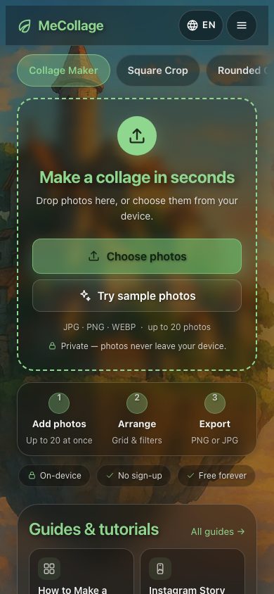
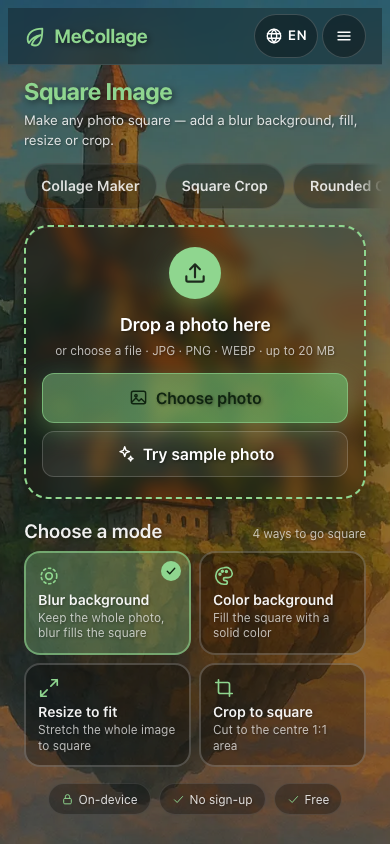
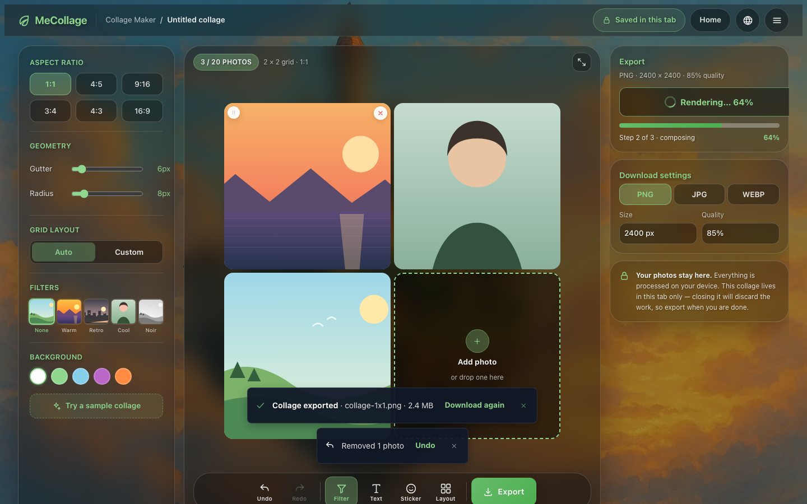
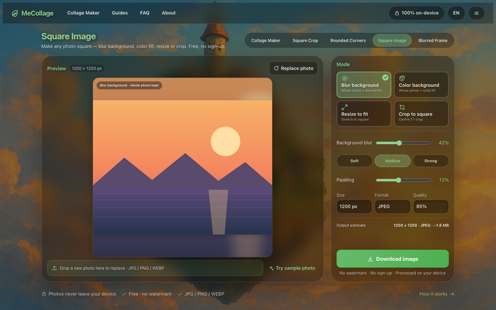

1

现状不是功能坏了，而是“不够像一个被设计过的产品”：首屏没有主操作、两层导航互相竞争、反馈靠 alert()。这四个原型分别回答“移动端怎么把工具顶到第一屏”“编辑器怎么把反馈做成产品级”“桌面工具页的 IA 怎么收”，并标注了对应的审计条目与 R0/R1 路线。




四个原型共用同一套判断；视觉语言零新增，只复用 design-tokens.css + components.css。
R0 = 小步 CSS/JS（1–2 天）；R1 = 布局与 IA（1–2 周，需 5 语言同步）。
| 改动 | 批次 | 类型 | 落点 | 覆盖审计项 |
|---|---|---|---|---|
| toast 四态 + 替换 alert() | R0 | JS + i18n | editor-interactions · 规格 A | P1-1 |
| 可见 Undo/Redo | R0 | HTML + JS | editor-interactions · 底部工具栏 | P1-2 |
| 导出 loading + 成功反馈 | R0 | JS + CSS | editor-interactions · 右栏 / 规格 B | P1-4 |
| 空位深色玻璃 + dashed | R0 | JS 样式常量 + CSS | editor-interactions · 规格 D | P2-2 |
| 空状态“试用示例照片” | R0 | HTML + JS | editor-interactions · 规格 C | P2-7 |
| 上传后滚动/聚焦 + toast | R0 | JS | mobile-tool · 预览态 | P0-4 |
| 44px 触控热区 | R0 | CSS | 四个原型全部 | P1-8 |
| 移动端单层顶栏 + 汉堡 / segmented | R1 | CSS 覆盖层 + JS | mobile-home / mobile-tool | P0-1 P0-2 P0-3 |
| 工具区前置、SEO 下移 | R1 | 布局（CSS 顺序） | 首页 + 4 工具页 × 5 语言 | P0-1 P2-10 |
| 工具名统一 / 文案收敛 | R1 | 文案（5 语言） | 工具页 + 导航 | P2-1 |
原型只写 docs/design/prototypes/，不改站点文件；以下是落地时需要新增/修改的具体位置。
.mc-appbar：56px 单层顶栏（替代移动端 270px 堆叠导航）.mc-seg：横向工具 segmented（44px 触控；桌面 36–40px）.mc-toast + --success / --info / --danger / --undo 四态（基于 --mc-surface-toast）.mc-photo-slot：空位深色玻璃 + --mc-border-brand-solid dashed（替换 JS 内联浅色）.mc-export-progress：8px 轨道 + 品牌绿进度showToast(type, message, action?)，替换 12 处 alert()，文案走 i18n 键scrollIntoView(preview) + 聚焦画布 + “N 张照片已添加”页面矩阵：移动布局改动 = 首页 + 4 工具页 × 5 语言（共 5 组模板）；R0 的 CSS/JS 项可先做全站覆盖层，不必逐页改 HTML（见审计 §5）。风险：5 语言副本同步（L-02）、SEO 文本位置调整需保持可爬、编辑器画布尺寸由 JS 计算（L-20，勿加 max-height）。